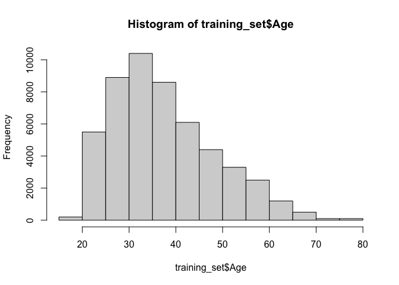

library(tidyverse)── Attaching core tidyverse packages ──────────────────────── tidyverse 2.0.0 ──
✔ dplyr 1.1.4 ✔ readr 2.1.5
✔ forcats 1.0.0 ✔ stringr 1.5.1
✔ ggplot2 3.5.2 ✔ tibble 3.3.0
✔ lubridate 1.9.4 ✔ tidyr 1.3.1
✔ purrr 1.0.4
── Conflicts ────────────────────────────────────────── tidyverse_conflicts() ──
✖ dplyr::filter() masks stats::filter()
✖ dplyr::lag() masks stats::lag()
ℹ Use the conflicted package (<http://conflicted.r-lib.org/>) to force all conflicts to become errorslibrary(tidymodels)── Attaching packages ────────────────────────────────────── tidymodels 1.3.0 ──
✔ broom 1.0.8 ✔ rsample 1.3.0
✔ dials 1.4.0 ✔ tune 1.3.0
✔ infer 1.0.8 ✔ workflows 1.2.0
✔ modeldata 1.4.0 ✔ workflowsets 1.1.1
✔ parsnip 1.3.2 ✔ yardstick 1.3.2
✔ recipes 1.3.1
── Conflicts ───────────────────────────────────────── tidymodels_conflicts() ──
✖ scales::discard() masks purrr::discard()
✖ dplyr::filter() masks stats::filter()
✖ recipes::fixed() masks stringr::fixed()
✖ dplyr::lag() masks stats::lag()
✖ yardstick::spec() masks readr::spec()
✖ recipes::step() masks stats::step()library(quanteda)Package version: 4.3.1
Unicode version: 14.0
ICU version: 71.1
Parallel computing: disabled
See https://quanteda.io for tutorials and examples.library(embedplyr)
library(pdftools)Using poppler version 23.04.0library(stringr)
library(text)[0;34mThis is text (version 1.5).
[0m[0;32mNewer versions may have improved functions and updated defaults to reflect current understandings of the state-of-the-art.[0m[0;35m
For more information about the package see www.r-text.org.[0m
[0;34mtextrpp python option is already set, text will use: condaenv = "textrpp_condaenv"[0m
[0;32m
Successfully initialized text required python packages.
[0m
[0;34mPython options:
type = "textrpp_condaenv",
name = "textrpp_condaenv".[0mlibrary(ggplot2)
library(readr)
library(patchwork)
training_set <- read.csv('./data/ds_train_full.csv')
# DO NOT TOUCH THIS ONE!
test_set <- read.csv('./data/ds_test_full.csv')
# The prompt given to the subjects in each block:
prompts_given <- data.frame(
prompt = c(
"log",
"orb",
"extension",
"synthesizer",
"treadmill",
"valet",
"toss",
"testimony",
"mow",
"forge"),
order = 1:10
)
# Since each subject goes through 10 blocks that has 10 steps it means that our training set consists of 51800/100 subjects (518)
# Since that this is Goal oriented challenge where the justification of using one method instead of the other is relevant, we would use two method to split our traning set for validationL bootstrap (enable us to asses confidence) and Kfold CV (the standard and straightforward approach)
# NOTICE, the rows are not independent of one another- each subject has 100 rows so when splitting we need to ensure there's no data linkage.
#Another consideration is class balance, we'll need to think whether or not we want strata sampling in bootstraps, meaning is there's any meaningful classes in training sets that might tilt the results towards one way due to unbalanced sampling in validation set vs the remaining set
# ------ Pre-processing
#School need to be re arrange by order
levels(factor(training_set$school))[1] "Associate degree in college (2-year)"
[2] "Bachelor's degree in college (4-year)"
[3] "Doctoral degree"
[4] "High school graduate (high school diploma or equivalent including GED)"
[5] "Less than high school degree"
[6] "Master's degree"
[7] "Professional degree (JD, MD)"
[8] "Some college but no degree" # Income need to be re arrange by order
levels(factor(training_set$Income)) [1] "$10,000 to $19,999" "$100,000 to $149,999" "$150,000 or more"
[4] "$20,000 to $29,999" "$30,000 to $39,999" "$40,000 to $49,999"
[7] "$50,000 to $59,999" "$60,000 to $69,999" "$70,000 to $79,999"
[10] "$80,000 to $89,999" "$90,000 to $99,999" "Less than $10,000" hist(training_set$Age)
education_levels <- c(
"Less than high school degree",
"High school graduate (high school diploma or equivalent including GED)",
"Some college but no degree",
"Associate degree in college (2-year)",
"Bachelor's degree in college (4-year)",
"Master's degree",
"Professional degree (JD, MD)",
"Doctoral degree"
)
income_range_levels <- c(
"Less than $10,000",
"$10,000 to $19,999",
"$20,000 to $29,999",
"$30,000 to $39,999",
"$40,000 to $49,999",
"$50,000 to $59,999",
"$60,000 to $69,999",
"$70,000 to $79,999",
"$80,000 to $89,999",
"$90,000 to $99,999",
"$100,000 to $149,999",
"$150,000 or more"
)
# ----------- columns to remove to set ay subject level not observartion
vary_variables <-c("word",
"cycle",
"q_num",
"wordId")
#-------------------- Corpus, Embedding and Dictionaries ----------------
# Since "docnames must be unique" we would create a word_id for every unique word
feature_engineering_funct <- function(dataset){
training_corpus <- dataset |>
mutate(word_id =row_number()) |>
corpus(docid_field = "word_id",
text_field="word")
# In order to use word_count methods we need that each participant's words (all 100 words) assign to him would be regarded as a text (let's say treatign his chains of words as one big 'tweet') then we would be able to count the the negative words in his chain
training_corpus_per_subject <- dataset |>
group_by(ID) |>
summarise(words_all = paste(word, collapse = " "), .groups = "drop") |>
ungroup() |>
corpus(docid_field = "ID",
text_field="words_all")
# Tokenazation
#due to the nature of the task I don't see aby reason to stems or lemmas, the same goes for not using N-Gram - the task's output is one-word each step
#Tokenazing the words with the current data structure might be useful later
training_tokens <- training_corpus |>
tokens(
remove_punct = T,
remove_symbols = T,
remove_numbers = T) |>
tokens_tolower()
neg_sentiment_words <-read.table("data/NRC-Emotion-Lexicon-Wordlevel-v0.92.txt",
header = TRUE, sep = "\t") |>
mutate(word = aback,
sentiment = factor(anger),
associate= X0) |>
select(-aback,-anger,-X0) |>
filter(sentiment== "negative" & associate == "1")
#------------------ Feature I - Negative Word Count -----------------
training_corpus_per_subject_token_dfm <- training_corpus_per_subject |>
tokens(
remove_punct = T,
remove_symbols = T,
remove_numbers = T) |>
tokens_tolower() |>
dfm()
training_perS_neg_count <-training_corpus_per_subject_token_dfm |>
dfm_lookup(
dictionary(
list(
negative_count = neg_sentiment_words$word)
)
)
# let's add it to our training set
dataset <- dataset |>
left_join(
training_perS_neg_count |>
convert("data.frame") |>
rename(ID = doc_id) |>
mutate(ID = as.numeric(ID)),
by = "ID")
#Sanity Check:
table(dataset$negative_count)
hist(dataset$negative_count)
#VERY NICE (BORAT VOICING)!!!
# -------------- Feature II - Embedded CCR (CES-D) -----------------
# The heavy lifting starts now! Let's enter the multidimentional vector world
# First I would fetch CES-D questioneare using 'stringr' and 'pdftools' packages:
CES_D_items <- pdf_text("./data/epidemiologic-studies-scale.pdf") |>
str_split("\\n(?=[0-9]+\\.)") |>
unlist() |>
# keep only lines that start with number + dot
str_subset("^[0-9]+\\.") |>
# clean whitespace
str_trim() |>
# remove the leading number + dot + space, keep only the text
str_remove("^[0-9]+\\.\\s*") |>
tibble::tibble(item_number = 1:20,
item_text = _) |>
# Dealing with reversed items
mutate(item_text = case_when(
item_number == 4 ~ "I felt I was not as good as other people.",
item_number == 8 ~ "I didn't felt hopeful about the future.",
item_number == 12 ~ "I wasn't happy.",
item_number == 16 ~ "I didn't enjoyed life.",
#. Fixing Bad Parsing
item_number == 20 ~ "I could not get “going.",
TRUE ~ item_text
)) |>
select(item_text) |>
pull()
sbert_embeddings <- function(texts) {
textEmbed(
texts,
model = "sentence-transformers/all-MiniLM-L12-v2",
layers = -2, # second to last layer (default)
tokens_select = "[CLS]", # use only [CLS] token
dim_name = FALSE,
keep_token_embeddings = FALSE
)$texts[[1]]
}
#It makes more sense to pass the text of single words and not the combine per subject since
# the contex are in effect when it comes to the word embedding of that word- since this is a free association task it should be forged into a non-sensed sentence.
dataset <- dataset |>
# every unique word gets an ID
mutate(wordId = dense_rank(word))
# training_corpus_sbert <- dataset |>
# embed_docs(
# text_col = "word",
# model = sbert_embeddings,
# id_col = "wordId",
# .keep_all = TRUE
# )
#Save it as RDS to reduce computation time upon relaunch
# saveRDS(training_corpus_sbert,
# file = "./rds/training_corpus_sbert.rds")
training_corpus_sbert <-readRDS("./rds/training_corpus_sbert.rds")
depression_ccr <- CES_D_items |>
embed_docs(sbert_embeddings, output_embeddings = TRUE) |>
average_embedding()
#getting the Cos Similiarity of each word to the CCR :
WordId_depression_ccr <- training_corpus_sbert |>
get_sims(
Dim1:Dim384,
list(depression = depression_ccr),
method = "cosine_squished"
)
#Aggregating it to subject level not word level
subject_cos_sim <- WordId_depression_ccr |>
group_by(ID) |>
summarise(
dep_cos_sim = mean(depression, na.rm = TRUE),
dep_sim_sd = sd(depression, na.rm = TRUE),
) |>
ungroup()
hist(subject_cos_sim$dep_cos_sim)
# Adding it to our Training set :
dataset <- dataset |>
left_join(subject_cos_sim,
by ="ID")
#---------------------- Feature III - DDR -----------------------
# Unlike CCR, where the items are sentences and the context of words affects their meaning, DDR follows a dictionary-based approach. Therefore, we would use word2vec for DDR embeddings, more suiting for static word embedding .
#How many associations are word and how many are sentences ?
n_multi <- sum(str_detect(dataset$word, "\\S\\s+\\S"), na.rm = TRUE)
prop_multi <- mean(str_detect(dataset$word, "\\S\\s+\\S"), na.rm = TRUE)
# less than 2%
#Since Word2Vec already uses static meaning of the words, use the per_subject df (in each all the 100 words are stacked in one string from each subject) for our embedding. Also, this aligns with the idea that every participant would get one DDR score
# options(download.file.method = "libcurl", timeout = 1200)
# Sys.setenv(CURL_HTTP_VERSION = "1.1")
#
# word2vec_model <- load_embeddings(
# model = "cc.en.300",
# words = featnames(training_corpus_per_subject_token_dfm),
# format = "rds",
# dir = "./rds"
# )
word2vec_model<-readRDS("./rds/cc.en.300.rds")
#Training the model on own corpus
word2vec_training_set <- training_corpus_per_subject_token_dfm |>
textstat_embedding(word2vec_model)
# Creating the DDR :
negative_word2vec_ddr <- predict(word2vec_model,
neg_sentiment_words$word) |>
average_embedding(w= "trillion_word", na.rm = T)
# Warning: 2401 items in `newdata` are not present in the embeddings object.
# the DDR is of 916 negative words
neg_mood_ddr_cossim <- word2vec_training_set |>
get_sims(
dim_1:dim_300,
list(negative_DDR = negative_word2vec_ddr),
method = "cosine_squished"
) |>
rename(ID= doc_id) |>
mutate(ID = as.numeric(ID))
#let's add that feature into our training set
dataset <- dataset |>
left_join(neg_mood_ddr_cossim,
by= "ID")
# ------------ Feature IV - Semantic Distance (first Word)--------------
# Several studies suggest that depression—especially rumination—is characterized by fixation on a narrow, predominantly negative semantic space. Consequently, I expect smaller semantic distances among associations in depressed participants.
#Let's get the embedding of each word in the corpus, aka all the words subject use in the task. Firstly, we would embedd the prompted words:
E <- as.matrix(predict(word2vec_model, prompts_given$prompt))
prompts_embedding <- data.frame(
prompt_n = 1:nrow(E),
word = rownames(E),
E
)
for (q in 1:10) {
# We are running on the first word given in each chain (cycle - where q_num == 1)
# getting the prediction of the embedding by the model, adding the embedding to
# the q1_words df. The q lop is needed because we compare the cos_sim to DIFFENERT word each cycle
q1_words <- dataset|>
filter(q_num ==1) |>
mutate(word = tolower(word))|>
select(word,
wordId,
cycle,
q_num,
ID)
I1_emd <- as.matrix(predict(word2vec_model, unique(q1_words$word))) |>
as.data.frame() |>
rownames_to_column("word")
# Adding the embedding to first words
q1_words <- q1_words |>
left_join(I1_emd, by = "word") |>
mutate(w2v_oov = if_else(!word %in% I1_emd$word, TRUE, FALSE))
#Warning: 54 items in `newdata` are not present in the embedding object.
d_prompt1_to_word1 <- q1_words |>
get_sims(
dim_1:dim_300,
list(d_0_1 = prompts_embedding |>
filter(prompt_n == q) |>
select(-word,-prompt_n) |>
as.numeric()),
method = "cosine_squished"
)
}
# wide for each subject and add it to training set
dataset <- dataset |>
left_join(d_prompt1_to_word1 |>
pivot_wider(
id_cols = ID,
names_from = cycle,
names_glue = "d_0_1_c{cycle}",
values_from = d_0_1,
values_fill = NA_real_
),
by ="ID") |>
# creating a mean Distance from prompt to word 1
mutate(
d_0_1_mean = rowMeans(pick(starts_with("d_0_1_c")), na.rm = TRUE)
) |>
#Making that every Subject would have only one datapoint:
select(-vary_variables)|>
distinct(ID, .keep_all = TRUE)
dataset
}
# Creating the features on the training set
fe_training_set<- feature_engineering_funct(training_set)
[0;34mProcessing batch 1/1
[0m
[0;33mWarning: non-ascii characters were found in: texts 1; texts 20 Many large laguage models cannot handle them.
[0m
[0;32mTo examine thise text cases use the textNonASCII() function.
[0m
[0;32mNon-ASCII characters has been removed.
[0m
[0;32mCompleted layers output for texts (variable: 1/1, duration: 6.401044 secs).
[0m
[0;32mCompleted layers aggregation for word_type_embeddings.
[0m
[0;34mCompleted layers aggregation (variable 1/1, duration: 0.579468 secs).
[0m
[0;32mMinutes from start: 0.138[0m
[0;30mEstimated embedding time left = 0 minutes[0m
Warning in predict.embeddings(model, feats, .keep_missing = TRUE): 224 items in
`newdata` are not present in the embeddings object.Warning in predict.embeddings(word2vec_model, neg_sentiment_words$word): 2401
items in `newdata` are not present in the embeddings object.Warning in predict.embeddings(word2vec_model, unique(q1_words$word)): 54 items
in `newdata` are not present in the embeddings object.
Warning in predict.embeddings(word2vec_model, unique(q1_words$word)): 54 items
in `newdata` are not present in the embeddings object.
Warning in predict.embeddings(word2vec_model, unique(q1_words$word)): 54 items
in `newdata` are not present in the embeddings object.
Warning in predict.embeddings(word2vec_model, unique(q1_words$word)): 54 items
in `newdata` are not present in the embeddings object.
Warning in predict.embeddings(word2vec_model, unique(q1_words$word)): 54 items
in `newdata` are not present in the embeddings object.
Warning in predict.embeddings(word2vec_model, unique(q1_words$word)): 54 items
in `newdata` are not present in the embeddings object.
Warning in predict.embeddings(word2vec_model, unique(q1_words$word)): 54 items
in `newdata` are not present in the embeddings object.
Warning in predict.embeddings(word2vec_model, unique(q1_words$word)): 54 items
in `newdata` are not present in the embeddings object.
Warning in predict.embeddings(word2vec_model, unique(q1_words$word)): 54 items
in `newdata` are not present in the embeddings object.
Warning in predict.embeddings(word2vec_model, unique(q1_words$word)): 54 items
in `newdata` are not present in the embeddings object.Warning: Using an external vector in selections was deprecated in tidyselect 1.1.0.
ℹ Please use `all_of()` or `any_of()` instead.
# Was:
data %>% select(vary_variables)
# Now:
data %>% select(all_of(vary_variables))
See <https://tidyselect.r-lib.org/reference/faq-external-vector.html>.